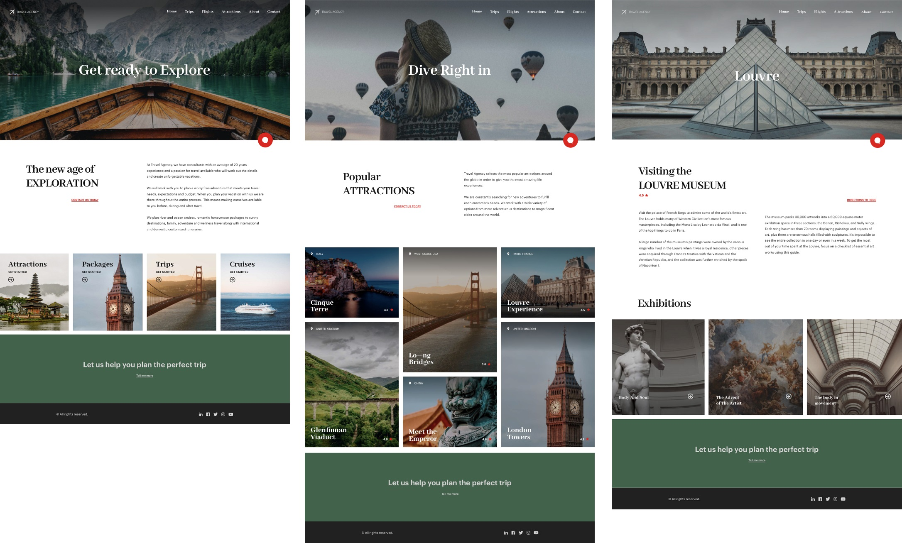

To introduce the Design System Object, suppose that you need to develop a customer-facing application for a travel agency.
Start by working with the design team on the first three screens of the application.
The designers show you the following desktop-size screens for the web application:
1. Homepage
2. Tourist Attractions page: it is obtained by clicking on the Home in the menu or choosing the corresponding image (the "Attractions" one) from the 4 shown below in Homepage.
3. ViewAttraction page with detailed information about an attraction: it is obtained by clicking on the desired attraction on the attractions page.

When comparing the three screens, a Design System can be easily noticed because perceptual and functional patterns can be recognized.
Some of the patterns that can be quickly identified on these three screens are as follows:
● The header and footer are repeated.
● Header: all pages start with a main image (hero image) that takes up the entire width and the same height, on which the most relevant text of the page and an icon to open a chatbot will appear.
● The texts above the hero images have exactly the same style (color, font, alignment, etc.).
● Other types of text can be recognized, which also have a consistent style among them (for example, the titles that appear below and to the left of the hero image; the content texts below and to the right of the hero image).
These and many other conceptualizations simplify the design and maintenance of the solution.
The path that seems to lead to the most efficient and effective, agile and maintainable solutions is one in which we can componentize as much as possible, making abstractions in order to reuse the same definitions. And that goes for the implementation of the screens as well as their design.
Next, focus on the Header to understand these ideas in action from the simplest level.
Since GeneXus 17 Upgrade 6.
| Backlinks | |
| Design System Object - Design abstractions for your screens | Toc:Design Systems |